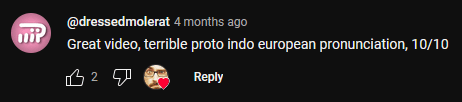
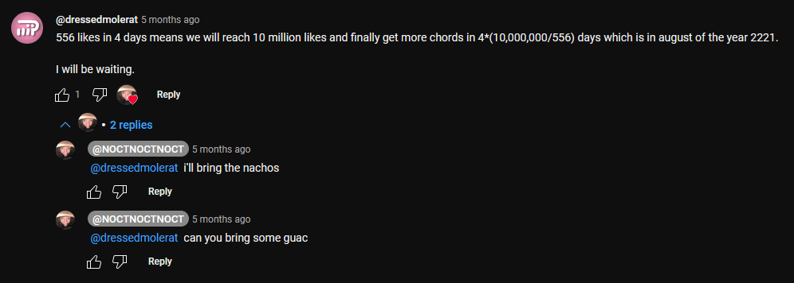

9/2-2025: Checking out my youtube comments
Apparently I don't have notifications on for any sort of comment interactions on youtube. This is why I today decided to check on my recent comments to see how they were doing. First of all, I noticed most of them had zero likes, which makes sense statistically. Second of all, I realized one comment on a vsauce short had a heart from Michael Stevens himself, which I thought was pretty cool, especially considering I couldn't even find another hearted comment on that video.
I also found this old comment on a video with way fewer views, where I calculated when it would reach the like goal of 10 million. Because I don't have notifications on, I never noticed that the creator of the video asked me to bring guac for the party in 2221. Glad I caught this now before the party, or it would have been very awkward.
On this minecraft video, I proposed an alternate title which I myself found very funny. Apparently other people did as well, because I have been liked all the way to the top comment. That's pretty cool, even though there are only 200 something comments.

On most of the comments that have replies, at least one is notifying me about the fact that my profile picture indeed resembles the toki pona logograph for soweli, which I think is really fun, because that means that toki pona people exist outside toki pona communities!
This concludes my first blog post on this website, and I now know that writing satisfying conclusions on short texts is hard. Bye!